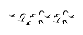
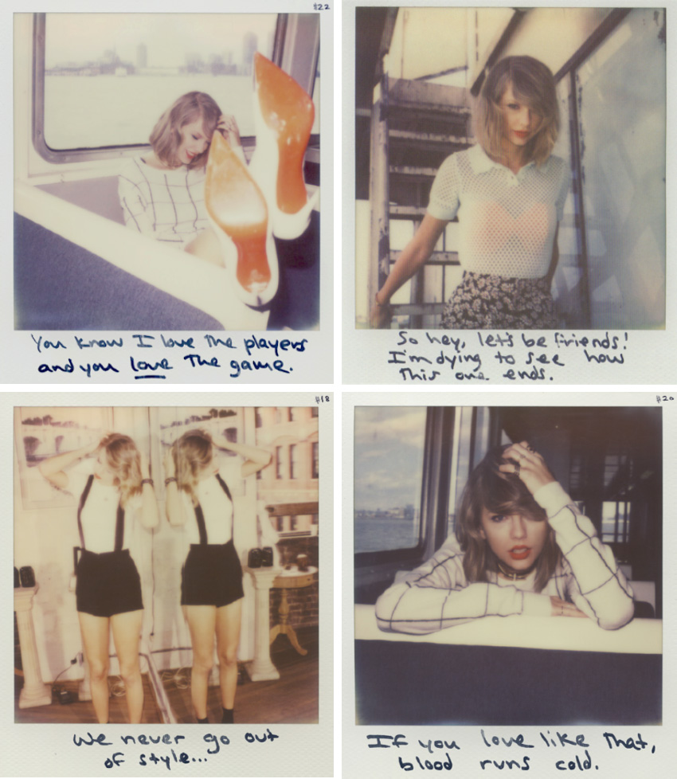

Taylor Swift - Era 1989
Prologo
“Uma vez essas músicas eram sobre minha vida – agora elas são sobre a sua.
Eu nasci em Reading, Pensilvânia, em 13 de Dezembro de 1989.
No mundo em que vivemos, muito é dito sobre quando nascemos e morremos. Nosso nascimento é celebrado
todo ano para comemorar o primeiro instante que chegamos ao mundo, e um funeral é feito para marcar o
dia que saímos dele. Mas, ultimamente, eu tenho me perguntado… O que pode ser dito sobre todos os
momentos entre o nosso nascimento e a nossa morte? O momentos quando renascemos…
O debate sobre a mudança das pessoas é interessante de observar porque parece que tudo O que eu faço é
mudar. Tudo que eu sempre faço é aprender com meus erros. Então, eu não cometo os mesmos erros de novo.
Mas aí eu cometo novos erros. Eu sei que as pessoas podem mudar porque isso acontece comigo pouco a
pouco, todo dia. Todo dia eu acordo como como alguém estreitamente novo. Não é bárbaro, intrigante e
bonito pensar que todo dia somos novos?
Nos últimos anos, eu acordei todo dia não apenas querendo, mas precisando escrever um novo estilo
musical. Eu precisava mudar o modo como contava minhas histórias, o modo como eu soava. Eu escutei
muitas músicas da década em que nasci e ouvi minha intuição dizendo que era bom eu seguir esse
sentimento. Eu também estava escrevendo enredos diferentes do que eu jamais tinha contado.
Eu escrevi sobre mudar-se para a mais barulhenta e mais iluminada cidade do mundo. A cidade pelo qual eu
sempre me senti oprimida… até agora. Eu acho que você deve saber quem é e o que quer para poder
enfrentar Nova York e sua estridente verdade. Eu escrevi sobre a emoção que tive quando finalmente
descobri que o amor, até certo ponto, é apenas um jogo de gato e rato. Eu escrevi sobre olhar para um
amor perdido e entender que nada de bom vem sem perda, dificuldade e luta constantes. Não há um “viver
juntos no paraíso” como eu imaginava. Nós nunca estamos fora de perigo porque sempre estamos brigando
por algo. Eu escrevi sobre o amor que volta para você quando você achava que ele estava para sempre
perdido, e como alguns sentimentos nunca perdem o estilo. Eu escrevi sobre uma importante lição que
aprendi recentemente… que as pessoas podem dizer o que quiserem sobre mim, mas elas não podem me fazer
ficar desesperada. Eu aprendi a deixar as coisas para lá.
Faz anos que conto minhas histórias. Algumas sobre crescer. Outras sobre desfazer-se. Essa é uma
história sobre virar você mesmo, e como resultado, viver!
Espero que saiba que você me deu coragem para mudar. Espero que saiba que quem você é é quem você
escolheu ser. E os rumores não definem você. Você é o único que decide pelo quê você será lembrado.
Da garota que disse que nunca cortaria o cabelo, ou mudaria-se para Nova York, ou acharia felicidade em
um mundo em que ela não está apaixonada…
Com amor, Taylor.”

Se no seu antecessor, o “Red”, Taylor havia apenas experimentado trabalhar com o hitmaker Max Martin em
apenas 3 faixas, desta vez ela resolveu colocá-lo à frente do que viria a ser o “1989”, o tendo como
companheiro na produção executiva do disco que foi descrito por Taylor como seu “primeiro álbum
oficialmente pop”.
“1989” apresenta o notável afastamento dos trabalhos anteriores da cantora, trocando as influências
country por synthpop, pop alternativo e o bubblegum pop. Taylor descreve o álbum como o seu
“renascimento”, por isso resolveu chamá-lo de ‘’1989’’, pois foi o ano que nasceu e também pela
influência do pop do final dos anos 80 em boa parte do disco.

Liricamente, Taylor manteve a qualidade dos trabalhos anteriores, porém mostrando amadurecimento ao
escrever sobre uma nova fase de sua vida, cantando sobre temas como autodescoberta, liberdade, o assédio
da mídia e, é claro, amor. Mas diferente dos trabalhos anteriores, neste álbum o tema amor foi abordado
com uma nova visão mais realista.
“1989” foi o terceiro disco de Taylor a vender mais de 1 milhão de cópias em sua semana de lançamento, a
consagrando como única artista da história a conseguir este feito com 3 álbuns.
Criticas e desempenho
Com esse albúm, Taylor conseguiu fazer o feito de 9,8 milhões de cópias vendidas mundialmente, 1 milhão e
300 mil cópias vendidas durante a primeira semana, primeiro colocado no Billboard Hot 200. Dentre as
vinte e nove avaliações, “1989” recebeu vinte e uma críticas positivas, oito críticas mistas e nenhuma
crítica negativa.
“Com “1989”, ela define o próximo capítulo de uma carreira que muito
provavelmente será bem longa.” (Aswad, J.)
“Profundamente estranho, fervorosamente emocional, selvagemente entusiástico. “1989” soa exatamente como Taylor Swift, embora não se pareça com nada que ela tenha criado antes. E sim, ela o leva ao extremo. Você está surpreso? Esta é Taylor Swift, lembra? O extremo é onde ela começa.” (Sheffield, R.)
“O diferencial de “1989” é a forma como Swift domina o álbum do começo ao fim: Max Martin e Greg Kurstin fazem discos de sucesso todos os anos, mas estes raramente são tão polidos e inteligentes, o que nos faz crer que este foi obra da mulher cujo nome está na capa.” (McCormick, N.)